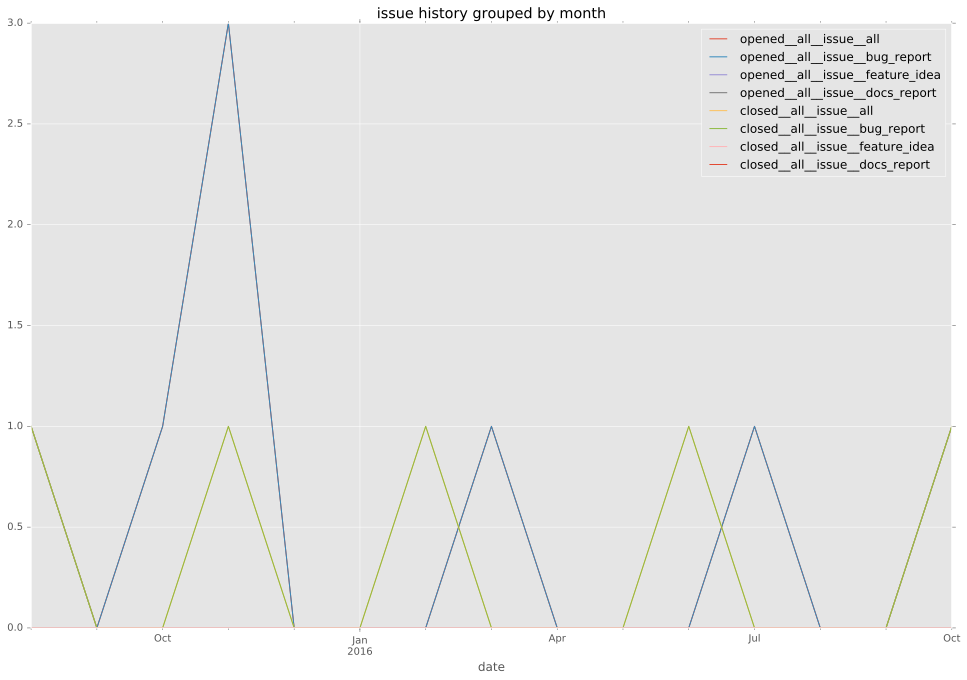
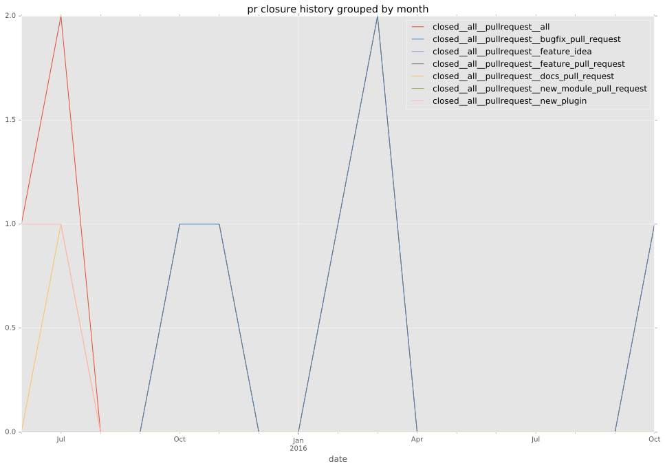

authors
maintainers
- schwartzmx
contributors
- ilpianista : 2 commits
- schwartzmx : 31 commits
total issue counts
pullrequest: 8
docs pull request: 1
bugfix pull request: 5
issue: 8
new plugin: 2
bug report: 8
issue history

pullrequest history

days open by issue type
all
count: 18
std: 72.6402407427
min: 0
max: 216
median: 39.0
mean: 69.3888888889
pullrequest
count: 0
std: nan
min: nan
max: nan
median: nan
mean: nan
docs pull request
count: 2
std: 0.0
min: 0
max: 0
median: 0.0
mean: 0.0
bugfix pull request
count: 8
std: 42.4850814152
min: 0
max: 115
median: 39.0
mean: 58.875
issue
count: 0
std: nan
min: nan
max: nan
median: nan
mean: nan
new plugin
count: 3
std: 99.3042463006
min: 20
max: 192
median: 192.0
mean: 134.666666667
bug report
count: 5
std: 92.0608494421
min: 0
max: 216
median: 42.0
mean: 74.8
closures grouped by total days open